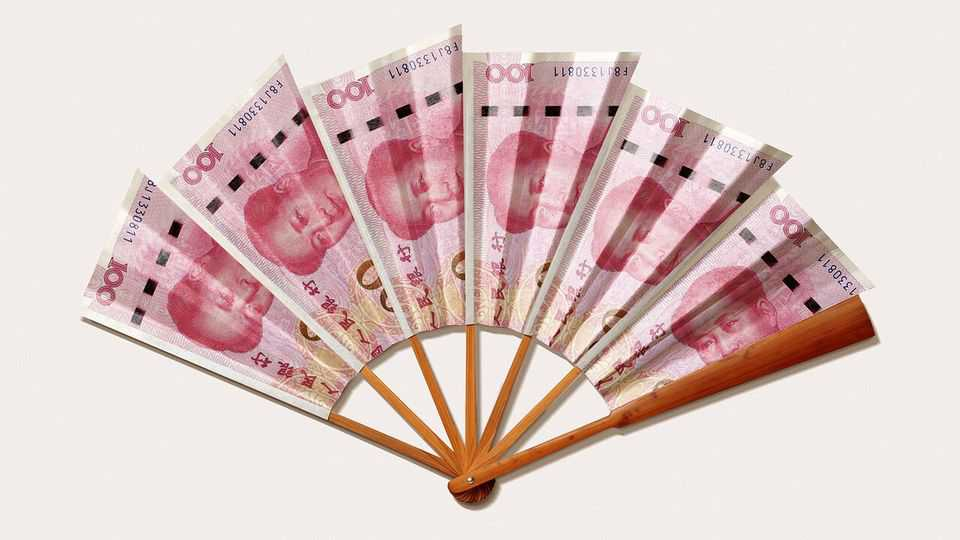

China’s new infrastructure push will help itself and the world
But it must still do more to lift consumption

Oct 1st 2026
THREE YEARS ago this newspaper explored the voguish notion of “Peak China”: the idea that the second-biggest economy in the world might stop gaining ground on the first. Judging by the headlines since, that scenario now looks quaint. China has wowed the world with its electric cars, dancing robots and choreographed drones. The country won its latest trade war with America and plans to lead the next industrial revolution. The red-carpet reception enjoyed by China’s leader, Xi Jinping, in Washington in September was welcomed back home as due recognition of the country’s equal stature.
But if you check the macroeconomic figures, the thesis looks intact. Rather than overshooting projections made in 2023, China’s economy has undershot them. Then, forecasters expected GDP to be 80% of America’s by now, when converted into dollars at market exchange rates. Instead, it is still only two-thirds. Catch-up has indeed ground to a halt.
This is the context in which the government is making a big, new infrastructure push. As we report, China plans to spend about 25trn yuan ($3.7trn) over five years on what it calls the “six networks”: electricity, computing, communications, logistics, water and pipelines. This is a vast sum, equivalent to 3% of its cumulative GDP over the next five years. If the spending is front-loaded, it will provide a welcome boost to China’s economy and the world’s.
But what will it buy? Economists will groan at the thought of more steel and concrete. China is well known for its white elephants and vaulting bridges to nowhere. Yet the six-networks project is better judged. One aim is to build the upstream infrastructure for a superintelligent economy. Another is to “back-fill” some of the urban infrastructure, such as flood defences, that fell behind the rapid growth of its cities.
The push is also well timed. One reason China has not closed the gap with America is the chronic weakness of domestic demand—the spending of China’s households, firms and government. The spending shortfall has put downward pressure on its currency and prices. As a consequence, China has become worryingly dependent on foreigners to buy its goods, even as it boasts of its technological self-reliance.
The problem stems from a high household saving rate and a five-year slump in home-building. It also reflects a recent and alarming wobble in manufacturing and infrastructure investment. Firms hesitate to expand capacity because they worry about cut-throat competition for reluctant consumers. Local officials meanwhile seem preoccupied with tightening their belts ahead of a big Communist Party reshuffle.
The best response would be to fix the property market and liberate the consumer through more generous pensions and child benefits. Policymakers introduced baby bonuses last year and have inched up rural pensions. On September 29th they announced a mortgage subsidy for first-time buyers of small flats. These measures are, however, too limited to restore morale or stabilise housing prices. They must do more.
In the meantime, the six networks should give growth a welcome boost. Investment, when it bears fruit, adds to a country’s productive capacity. But before then, it adds to demand, lifting wages and absorbing goods otherwise destined for overseas markets. All else equal, the extra spending will thereby shrink China’s vast trade surplus.
The six networks should waste less than past infrastructure programmes. Local officials are on a tighter leash. Many of the projects will upgrade rather than expand existing structures. The spending will also be financed differently. Past splurges relied on local-government land sales and risky off-balance-sheet borrowing. This time more money will come from long-term bonds, loans from state-directed “policy banks” and investment by state-owned enterprises, such as China Mobile.
China’s investment boom after the global financial crisis helped narrow its external surplus from 10% of GDP in 2007 to 1.5% ten years later. By reviving growth and keeping deflation at bay, the latest push should ensure that “peak China” remains some way off. By increasing domestic demand, it could ensure that a peak in China’s trade surplus is closer to hand. ■